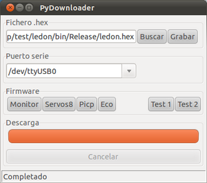

Contenido
[ocultar]Introduction
The Pydownloader is the tools that will be used for downloading software into the Skycube board. The .hex files are the binary programs generated with the CodeBlocks+SDCC. The pydownloader tool reads these files and burns them into the PIC flash memory.
Installation on linux platforms
Ubuntu 10.04/10.10
Install the following .deb packages. Chose the preferred architecture: i386 (32-bits) / x86-64 bits
i386 (32 bits) architecture
| Libiris: python-libiris_1.2-5_i386-ubuntu-10.04.deb |
| LibStargate: python-libstargate_1.2-1_i386-ubuntu-10.04.deb |
| Pydownloader: pydownloader-wx_1.0-2_i386-ubuntu-10.04.deb |
x86-64 bits
| Libiris: python-libiris_1.2-5_amd64-ubuntu-10.10.deb |
| LibStargate: python-libstargate_1.2-1_amd64.deb |
| Pydownloader: pydownloader-wx_1.0-2_amd64.deb |
Installation on Windows 7 / windows XP
Download and install the following packages. Accept the default configuration:
| python-2.5.msi. Python 2.5 interpreter |
| 2-pywin32-210.win32-py2.5.zip. Python extension for windows |
| 3-pyserial-2.2.win32.zip. Serial communications for Python |
| 5-libIris-1.2.win32.zip 5-libIris-1.2.win32.zip. LibIris |
| 4-libstargate-1.2.win32.zip. Libstargate |
| wxPython2.8-win32-unicode-2.8.6.0-py25.exe. Wxpython for Windows |
| 6-pydownloader-wx-1.0.win32.zip. Pydownloader |
Interface explanation
The interface is in Spanish. However is very easy to use. Here is the translation/explanation:
Downloading the "hello world" program

The "hello world" program compiled in the previous section (led.hex) will be download into the Skycube board. Follow the instructions below:
- Start the pydownloader application
- Plug the skycube board to the USB.
- Select the serial port
- Windows: COM1, COM2, COM3...
- Linux: /dev/ttyUSB0, /dev/ttyUSB1...
- Click on the Browse button and open the file ledon.hex.
- Click on the Download button. The program will wait until the reset button is pressed on the Skycube board
- Press the reset button on the board. The download will start
Videos
In this video can be seen the process of downloading an ocillation software. In this example instead of clicking on the browse button the .hex file is directly drag to the interface. It is only needed to press the reset button on the Skycube board.
|
Link to the video in YouTube |


Links
News
- Feb/20th/2011: This page is started!